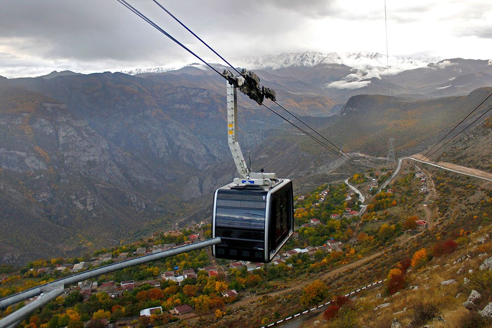

Սյունիքի մարզը ամենաբարձր կարգավիճակ ունեցող վարչատարածքային միավորն է Հայաստանի հարավում։Սյունիքն ունի հազարամյակների պատմություն․ այն սկսվում է անհիշելի ժամանակներից, շարունակվում Վանի թագավորության, Մեծ Հայքի թագավորության, Սյունիքի իշխանության շրջաններով։ Մարզը հարուստ է պատմամշակութային ժառանգությամբ։ Այստեղ պահպանվել են նախնադարյան բնակատեղիներ, ամրություններ, դամբարանադաշտեր, մեր թվարկությամբ թվագրվող ամրոցներ, կրոնական կառույցներ և ձեռակերտ այլ արժեքավոր օբյեկտներ։
Սյունիքի տեսարժան վայրերը կարող եք դիտել այստեղ։
Սյունիքում է գտնվում աշխարհի ամենաերկար ճոպանուղին`Տաթևում։
